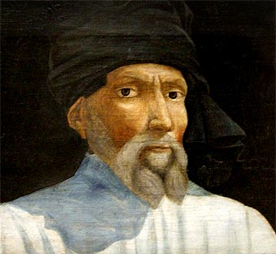

Donato di Niccolò di Betto Bardi
Donatello es uno de los escultores más influyentes del Renacimiento italiano y desempeñó un papel fundamental en la evolución de la escultura renacentista.

María Magdalena Penitente
La Magdalena penitente es una escultura de madera de María Magdalena realizada por el escultor renacentista italiano Donatello, la pieza fue recibida con asombro por su realismo sin precedentes.